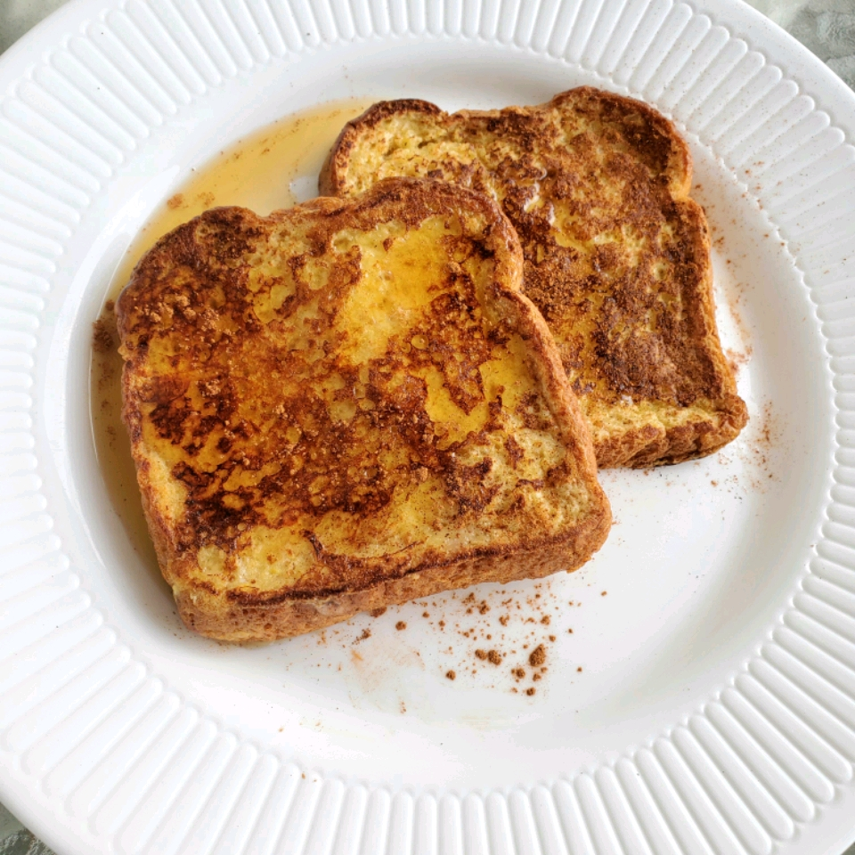

French Toast

Sweet, aromatic, buttery goodness.
What can I say, we're a breakfast household. My kids are picky eaters with anything but breakfast. French toast is one thing they never turn down.
Maybe it's the theatrical nature of cascading maple syrup, the aromatic cinnamon and nutmeg, or the smell of caramelized butter and sugar from the
pan. Either way, its great to make memories together over this classic breakfast staple.
Ingredients
- 1 loaf brioche, challah, white, or sourdough, sliced.
- 2 Tbsp sugar
- 1 tsp ground cinnamon
- 1/4 tsp ground nutmeg
- 4 eggs
- 1/4C milk
- 1/2 tsp vanilla extract
- Maple syrup for serving
Directions
- In a small bowl, combine cinnamon, nutmeg, sugar and set aside,
- Melt butter in a 10"-12" skillet over medium heat.
- Whisk together eggs, milk, vanilla, then whisk in dry ingredients until combined.
- Transfer mixture into a shallow container.
- Fry slices, flipping once, until golden brown and fragrant.